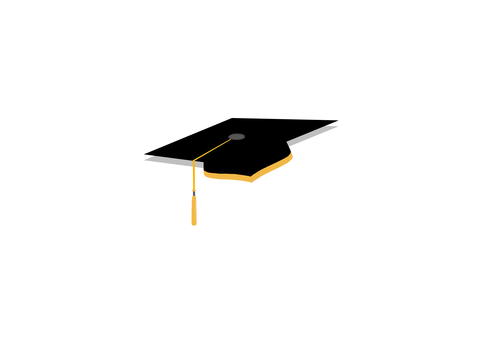

-
California Maritime Academy 2014 - 2018
Attended California Maritime Academy, participating in numerous extra-curricular activities:
- Resident Housing Officer
- Corps of Cadets: MPM Company Commander
- Varsity Soccer
- Department of Energy: Wind Competition
 Wind Competition
Wind Competition
-
So this is Computer Science2017 - 2018
During my spare time at Cal Maritime I created small side project plugins for a Minecraft Server. This immediate code to visual change in gameplay has been what inspired my computer science career.

-
KMC Savills Summer 2017
Three month summer internship in Manila, Philippines with a commercial real estate company called KMC Savills. Worked alongside the companies lead programmer to help organize and visualize their internal databases more efficiently.
Used C# and SQL in Visual Studios
- Visual Studio Code
- C#
- SQL
-
Cal Maritime GraduationSpring 2018
Graduation! Earned a Bachelor of Science in International Business and Logistics: Business Administration. Immediately enrolled into Northeastern University to obtain an advanced degree.
 -
Northeastern UniversityFall 2018 - present
Courses Taken:
- Intensive Foundations of CS: Python
- Discrete and Data Structures
- Computer Systems: C
- Oject Oriented Design: Java
- Database Management Systems: SQL
- HTML, CSS, Bootstrap 4, SCSS
- Algorithms (current)
- Compilers (current)